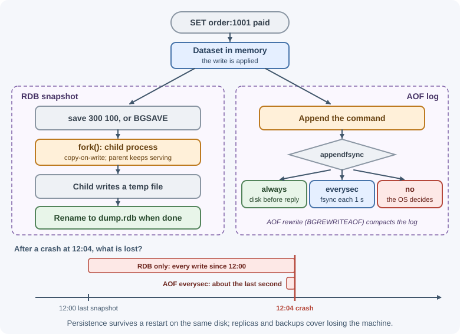
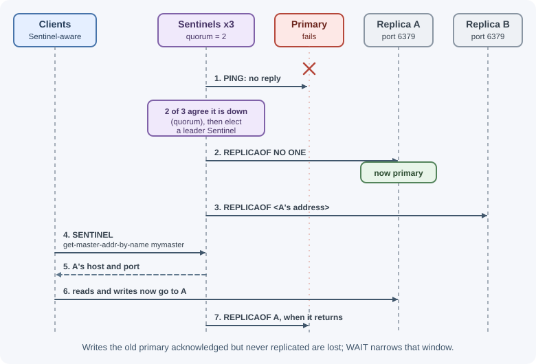
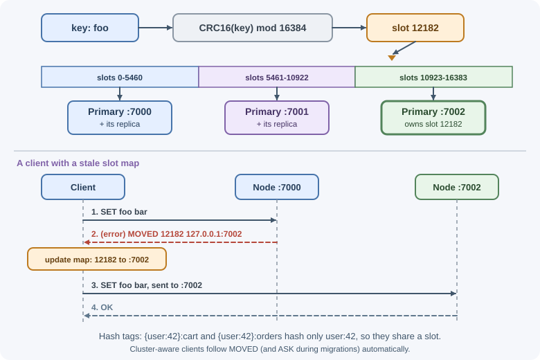

Persistence and High Availability¶
Redis keeps data in memory, but it can also write that data to disk and copy it to other servers. Persistence (RDB snapshots and the AOF log) decides how much data survives a restart. Replication, Sentinel, and Redis Cluster decide whether Redis keeps serving when a server fails and how it grows beyond one machine. This lesson explains each mechanism, the trade-offs, and how managed services package them.
Why it matters¶
If Redis is only a cache, losing it means a slow minute while the cache warms up. If it holds sessions, queues, rate limits, or the only copy of some data, losing it can log out every user or drop jobs. The right configuration depends on what the data is worth, so you need to know exactly what each option protects against and what it costs. Related theory is in availability and reliability and consistency and the CAP theorem.
Real-world usage¶
- Mastodon calls Redis a critical part of an instance: by default one
Redis instance holds feeds and queues, so its failure takes the whole
server down. Its scaling guide adds Redis Sentinel: the application is
given the Sentinel addresses (
REDIS_SENTINELS) and the primary's name (REDIS_SENTINEL_MASTER) and asks Sentinel for the current primary, so it follows failovers automatically (Mastodon: Scaling up your server). - GitLab runs separate Redis instances on GitLab.com and supports Redis
Cluster for its cache workloads. Because Cluster spreads keys over slots,
its developers must put hash tags in keys used together
(
project:{1}:set_a), and a validator checks this in development and tests (GitLab: Redis guidelines). - Slack learned that an in-memory queue is only as durable as Redis: after an outage, it put Kafka in front of its Redis job queue to provide "a buffer against memory exhaustion and job loss" (Slack engineering).
Popular providers: Amazon ElastiCache (Multi-AZ with automatic failover and replica promotion, plus scheduled backups), Amazon MemoryDB (a durable in-memory database with a Multi-AZ transactional log), and Google Cloud Memorystore for Redis.
How it works¶
RDB snapshots¶
An RDB file is a compact, point-in-time snapshot of the whole dataset
(dump.rdb by default).
Redis main process --fork()--> child process writes snapshot to temp file
| |
keeps serving clients rename temp -> dump.rdb when complete
- Snapshots are taken automatically by
save <seconds> <changes>rules (for example "after 300 seconds if at least 100 keys changed"), or manually withBGSAVE. - The child process shares memory with the parent using copy-on-write: pages are copied only when the parent modifies them. Under heavy writes, a snapshot can temporarily need much more memory, so leave headroom.
- Restarting from an RDB file is fast.
- Trade-off: everything written since the last snapshot is lost in a crash, often minutes of data.
AOF (append-only file)¶
The AOF logs every write command. On restart, Redis replays the log to rebuild the dataset.
How often the log is flushed to disk with fsync is set by appendfsync:
| Setting | Durability | Performance |
|---|---|---|
always |
Every write is on disk before the reply: minimal loss | Slowest |
everysec (default when AOF is on) |
At most about one second of writes lost | Good; the usual choice |
no |
The operating system decides when to flush (can be tens of seconds) | Fastest |
The log grows forever unless compacted. AOF rewrite (automatic, or
BGREWRITEAOF) writes the minimal set of commands that recreates the
current data. Since Redis 7, the AOF is stored as several files (a base file
plus incremental files, tracked by a manifest) in a dedicated directory, and
the base can be written in compact RDB format.
Choosing persistence¶
| Configuration | What you lose in a crash | Typical use |
|---|---|---|
| No persistence | Everything | Pure cache that can be rebuilt |
| RDB only | Writes since the last snapshot | Cache with faster warm-up; data where minutes of loss are acceptable |
AOF everysec (often plus RDB) |
About one second | Sessions, queues, counters |
AOF always |
Almost nothing (at a large throughput cost) | Rarely used; consider a database instead |

When both are enabled, Redis loads the AOF on startup, because it is the more complete record. A common default for self-hosted Redis is RDB snapshots on and AOF off, so check your configuration rather than assuming.
Persistence protects against a process restart on the same disk. It does not protect against losing the machine or the disk; that needs replicas and backups.
Replication¶
A replica keeps a copy of a primary's data:
writes
clients ----------> PRIMARY ---- async replication stream ----> REPLICA 1
\ \-----> REPLICA 2
\---- reads (optional, may be slightly stale) ---> replicas
- A replica connects with
REPLICAOF host port. - It receives a full snapshot, then a continuous stream of write commands.
- After a brief disconnect, it resumes from a replication backlog (partial resynchronization) instead of copying everything again.
Replication is asynchronous: the primary replies to the client before replicas confirm. If the primary dies, writes it acknowledged but had not yet sent are lost. Mitigations:
WAIT numreplicas timeoutblocks until that many replicas have received the preceding writes. It reduces, but does not eliminate, the loss window.min-replicas-to-writeandmin-replicas-max-lagmake a primary refuse writes when it cannot reach enough replicas, limiting damage when it is cut off from the rest of the system.
Replicas are read-only by default and can serve read traffic, but reads may return slightly old data.
Sentinel: automatic failover¶
Replication alone copies data; something must notice a failed primary and promote a replica. Redis Sentinel is a separate process (usually on port 26379) that does this:

- Monitoring: Sentinels ping the primary and replicas.
- Quorum: a configured number of Sentinels must agree the primary is unreachable before a failover starts, which avoids reacting to one Sentinel's network problem.
- Automatic failover: a replica is promoted and the others are reconfigured.
- Client discovery: applications connect to the Sentinels and ask for
the current primary (for example with
SENTINEL get-master-addr-by-name mymaster), so they follow failovers.
Run at least three Sentinels on independent machines. Sentinel provides high availability for one primary's dataset; it does not shard data.
Redis Cluster: sharding plus failover¶
When the dataset or write load is too big for one primary, Redis Cluster splits keys across several primaries, each with its own replicas.

- The key space is divided into 16,384 hash slots. A key's slot is
CRC16(key) mod 16384, and each primary owns a range of slots. - Hash tags: if a key contains
{...}, only the text inside the braces is hashed, so{user:42}:cartand{user:42}:ordersshare a slot. - Multi-key limits: commands, transactions, and Lua scripts that touch
several keys work only if all keys are in the same slot; otherwise Redis
returns a
CROSSSLOTerror. Only database 0 exists. - Redirects: if a client sends a command to the wrong node, the node
replies
MOVED <slot> <host:port>(the slot lives elsewhere; update your slot map) or, while a slot is being migrated,ASK <slot> <host:port>(try that node once, for this command only). Cluster-aware clients handle both. - Failover is built in: nodes gossip over a cluster bus, detect a failed primary, and promote one of its replicas; Sentinel is not used.
- Resharding: slots can be moved between nodes while the cluster is running.
A common minimum is three primaries, each with at least one replica. See database scaling for sharding in general; MongoDB uses related ideas in replication and sharding.
Sentinel or Cluster?¶
| Sentinel | Cluster | |
|---|---|---|
| Purpose | High availability for one dataset | Sharding and high availability |
| Write capacity | One primary | Several primaries |
| Multi-key operations | Unrestricted | Same hash slot only |
| Client requirements | Sentinel-aware client | Cluster-aware client |
| Choose when | Data fits on one server | Data or writes exceed one server |
Backups¶
Persistence and replicas do not protect against mistakes: a FLUSHALL or a
bad deploy is replicated instantly. Back up RDB files on a schedule (the
current dump.rdb can be copied safely, because Redis writes a temporary
file and renames it only when complete), store copies off the server, and
test restores. Managed services offer automatic snapshots. See
backups.
Managed services¶
Running replication, failover, patching, and backups yourself takes effort. Managed offerings handle them:
- Amazon ElastiCache offers Valkey, Redis OSS, and Memcached engines, with replication groups, Multi-AZ automatic failover, cluster mode for sharding, and automatic backups. Amazon MemoryDB targets use as a durable primary database. See AWS.
- Other clouds provide similar services, such as Google Cloud Memorystore and Azure Managed Redis (Microsoft is retiring Azure Cache for Redis in its favor), and Redis Ltd. offers its own cloud service.
Read the provider's documentation for exact failover times, durability guarantees, and supported commands; managed services restrict some administrative commands, so check the provider's list before relying on one.
Memory limits and fragmentation¶
- Set
maxmemorybelow the machine's RAM, leaving headroom for copy-on-write during snapshots and rewrites, replication buffers, and client buffers. Running out of RAM can get the process killed by the operating system. - Fragmentation: the allocator may hold more memory than the data needs.
INFO memoryreportsmem_fragmentation_ratio(used_memory_rssdivided byused_memory), but that ratio also includes other process overheads, so a high value only matters whenmem_fragmentation_bytesis large;allocator_frag_ratiois the true fragmentation metric. Redis can defragment actively withactivedefrag yes. A ratio below 1 (resident memory smaller than used memory) hints that memory was swapped out, which is very slow.
When to use and when not to use¶
Choose each mechanism for what it protects against:
- No persistence: a pure cache that can be rebuilt from the source.
- RDB snapshots: faster restarts and simple backup files, when losing the writes since the last snapshot is acceptable.
- AOF
everysec(often with RDB): sessions, queues, and counters where losing about a second of writes is the most you can accept. - Replicas + Sentinel: keep one dataset available when a server fails.
- Redis Cluster: the data or the write load no longer fits on one primary.
Do not rely on them when:
- Losing even acknowledged writes is unacceptable (payments, ledgers): replication is asynchronous, so keep the record of truth in a database.
- You need protection from mistakes such as
FLUSHALLor bad deploys: persistence and replicas copy the mistake; only off-server backups help. - Your application needs many multi-key operations on unrelated keys: Cluster restricts them to one hash slot, so a single primary with Sentinel may be simpler.
| RDB | AOF everysec |
RDB + AOF | |
|---|---|---|---|
| Writes lost in a crash | Everything since the last snapshot | About one second | About one second (AOF is loaded on startup) |
| Restart speed with a big dataset | Fastest | Slower (replays the log) | AOF used; a compact RDB-format base makes it faster |
| File size | Compact | Usually bigger | Both kept |
| Extra disk I/O | Periodic snapshots | Continuous appends and fsyncs | Both |
| Good for | Caches, backups | Sessions, queues | Must-keep state that also needs backup files |
Practical examples¶
Checking and changing persistence¶
127.0.0.1:6379> CONFIG GET save
1) "save"
2) "3600 1 300 100 60 10000"
127.0.0.1:6379> CONFIG GET appendonly
1) "appendonly"
2) "no"
127.0.0.1:6379> CONFIG SET appendonly yes
OK
127.0.0.1:6379> BGSAVE
Background saving started
127.0.0.1:6379> INFO persistence
# Persistence
rdb_last_bgsave_status:ok
aof_enabled:1
aof_last_bgrewrite_status:ok
...
The equivalent redis.conf settings:
save 3600 1 300 100 60 10000
appendonly yes
appendfsync everysec
Replication status¶
127.0.0.1:6379> INFO replication
# Replication
role:master
connected_slaves:2
slave0:ip=10.0.1.12,port=6379,state=online,offset=884213,lag=0
slave1:ip=10.0.1.13,port=6379,state=online,offset=884213,lag=1
...
127.0.0.1:6379> SET order:1001 "paid"
OK
127.0.0.1:6379> WAIT 1 100 # wait up to 100 ms for 1 replica
(integer) 2
(Redis output still uses the older words "master" and "slave" in some fields.)
Hash slots and redirects¶
127.0.0.1:7000> CLUSTER KEYSLOT somekey
(integer) 11058
127.0.0.1:7000> CLUSTER KEYSLOT foo{hash_tag}
(integer) 2515
127.0.0.1:7000> CLUSTER KEYSLOT bar{hash_tag}
(integer) 2515 # same tag, same slot
$ redis-cli -p 7000
127.0.0.1:7000> SET foo bar
(error) MOVED 12182 127.0.0.1:7002
$ redis-cli -c -p 7000 # -c follows redirects
127.0.0.1:7000> SET foo bar
-> Redirected to slot [12182] located at 127.0.0.1:7002
OK
127.0.0.1:7002> MSET user:1 a user:2 b
(error) CROSSSLOT Keys in request don't hash to the same slot
Connecting to Redis Cluster from Node.js¶
import { createCluster } from "redis";
const cluster = createCluster({
rootNodes: process.env.REDIS_CLUSTER_URLS.split(",").map((url) => ({ url })),
});
cluster.on("error", (err) => console.error("Redis Cluster error", err));
await cluster.connect(); // discovers all nodes and the slot map
await cluster.set("user:42:name", "Ada"); // routed to the right node
await cluster.mGet(["{user:42}:cart", "{user:42}:orders"]); // same slot: allowed
For Sentinel-managed deployments, use a client with Sentinel support (check your client's documentation) and give it the Sentinel addresses and the primary's name instead of a fixed host.
Best practices¶
- Decide what losing Redis data would cost, then choose persistence to match.
- Use AOF with
everysec(often together with RDB) for sessions, queues, and other state you must keep. - Run replicas plus Sentinel, or Redis Cluster, when downtime matters; use at least three Sentinels on separate machines.
- Remember that replication is asynchronous; never treat Redis as the only copy of critical financial or legal records.
- Design keys with hash tags if you will use Cluster and need multi-key operations.
- Take off-server backups and test restoring them.
- Leave memory headroom for forks and buffers; monitor fragmentation and replication lag.
- Use a managed service unless you have the operational capacity to run Redis yourself.
In production¶
Writes are suddenly refused after a background save fails.
- Detect:
INFO persistenceshowsrdb_last_bgsave_status:err; the Redis log shows the fork or the save failing; clients get errors on every write. - Cause: with
stop-writes-on-bgsave-error yes(the default), Redis stops accepting writes after a failed snapshot. Common reasons are a full disk orfork()failing for lack of memory when the kernel'svm.overcommit_memoryis 0. - Fix: free disk space, set
vm.overcommit_memory = 1as the Redis FAQ recommends, and leave memory headroom for copy-on-write.
Latency spikes every time a snapshot or AOF rewrite starts.
- Detect:
latest_fork_usecinINFO statsis large;LATENCY DOCTORreports fork-related events; spikes line up withsaverules. - Cause: the fork itself runs on the main thread and takes longer for large datasets; transparent huge pages make it worse.
- Fix: disable transparent huge pages as the Redis latency guide says, keep each instance's dataset moderate, and schedule snapshots away from peaks.
Writes slow down while the disk is busy.
- Detect:
aof_delayed_fsyncinINFO persistencekeeps increasing. - Cause: the disk cannot keep up with AOF fsyncs, often while a snapshot or rewrite is also writing.
- Fix: use faster local disks, keep
appendfsync everysec, and considerno-appendfsync-on-rewrite yesif a small extra loss window during rewrites is acceptable.
Replicas keep re-copying the whole dataset.
- Detect:
sync_fullkeeps rising inINFO stats; the replica'smaster_link_statusflips todown. - Cause: after a disconnect, the replica's position is no longer in the
primary's replication backlog (
repl-backlog-size, 1 MB by default), or the replica output buffer limit cuts the connection during the transfer. - Fix: raise
repl-backlog-sizeand theclient-output-buffer-limit replicasetting for large or busy datasets.
Recent writes are missing after a failover.
- Detect: data acknowledged just before the primary failed is absent on the promoted replica.
- Cause: replication is asynchronous, so the replica never received those writes.
- Fix: use
WAITfor writes that matter, configuremin-replicas-to-writeandmin-replicas-max-lag, and keep critical records in a database.
Important terminology¶
- RDB: A point-in-time snapshot file of the dataset.
- AOF: The append-only file that logs write commands.
- fsync: A system call that forces buffered data onto disk.
- Copy-on-write: Sharing memory between processes until one modifies a page.
- Replica: A server that holds a copy of a primary's data.
- Failover: Promoting a replica when the primary fails.
- Quorum: The number of Sentinels that must agree before acting.
- Hash slot: One of 16,384 buckets that keys are assigned to in Redis Cluster.
- MOVED / ASK: Redirect replies telling a client which node owns a slot.
Common mistakes and misconceptions¶
- "Redis is in memory, so it cannot persist" or "it always persists." Persistence is configurable, and the defaults vary.
- "Replicas mean zero data loss." Asynchronous replication can lose recently acknowledged writes during failover.
- "Persistence is a backup." A deleted key is deleted in the AOF and replicas too.
- Running one or two Sentinels. Too few to form a reliable majority.
- Using multi-key commands across slots in Cluster. They fail with
CROSSSLOT. - Setting
maxmemoryequal to the machine's RAM. Forks and buffers can push the process out of memory. - Hard-coding the primary's address with Sentinel. The application does not follow failovers.
Revision questions¶
- Compare RDB snapshots and AOF in terms of data loss and performance.
- What does each
appendfsyncsetting trade off? - Why can a failover lose writes that clients saw as successful, and how
does
WAIThelp? - What jobs does Sentinel perform, and why does it need a quorum?
- How does Redis Cluster decide which node stores a key, and what are hash tags for?
- What is the difference between
MOVEDandASKredirects?